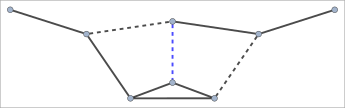
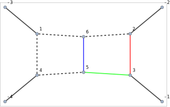

FCGraphCuttableQ[{edges, labels}, {m1,m2, ...}] checks
whether the given graph representing a loop integral can be cut such,
that no propagator containing masses {m1,m2, ...} goes on
shell. To that aim labels must contain masses occurring in
the respective propagators.
FCGraphCuttableQ uses FCGraphFindPath as
the back-end.
The list {edges, labels} can be the output of
FCLoopIntegralToGraph.
Overview, FCGraphFindPath, FCLoopIntegralToGraph, SameSideExternalEdges.
This integral has no imaginary part due to the massive
m1-line that cannot be cut
graph1 = {{-3 -> 2, -1 -> 1, 1 -> 3, 1 -> 4, 2 -> 3, 2 -> 4, 2 -> 4, 3 -> 4}, {q1, q1, {p3, 1, m1^2}, {p3 + q1, 1, m1^2},
{p2, 1, m1^2}, {p1 + q1, 1, m2^2}, {p1 - p2, 1, m1^2}, {p2 - p3, 1, 0}}, {0, 0, SFAD[{{I*p3, 0}, {-m1^2, -1}, 1}],
SFAD[{{I*p2, 0}, {-m1^2, -1}, 1}], SFAD[{{I*(p3 + q1), 0}, {-m1^2, -1}, 1}], SFAD[{{I*(p1 + q1), 0},
{-m2^2, -1}, 1}], SFAD[{{I*(p2 - p3), 0}, {0, -1}, 1}], SFAD[{{I*(p1 - p2), 0}, {-m1^2, -1}, 1}]}, 1};FCLoopGraphPlot[graph1, GraphPlot -> {MultiedgeStyle -> 0.35, Frame -> True}, Style -> {
{"InternalLine", _, _, mm_ /; ! FreeQ[mm, mg | m3]} -> {Red, Thick, Dashed},
{"InternalLine", _, _, mm_ /; ! FreeQ[mm, mc | m2]} -> {Blue, Thick, Dashed},
{"InternalLine", _, _, mm_ /; ! FreeQ[mm, mb | m1]} -> {Black, Thick}
}]FCGraphCuttableQ[graph1, {m1}]\text{False}
graph2 = {{-3 -> 2, -1 -> 1, 1 -> 3, 1 -> 4, 2 -> 4, 2 -> 5, 3 -> 5, 3 -> 6, 4 -> 6, 5 -> 6}, {q1, q1, {p3, 1, 0}, {p3 + q1, 1, m1^2},
{p1 + q1, 1, 0}, {p1, 1, m1^2}, {p2, 1, m1^2}, {p2 - p3, 1, m1^5}, {-p1 + p3, 1, m2^2}, {p1 - p2, 1, m1^2}},
{0, 0, SFAD[{{I*p3, 0}, {0, -1}, 1}], SFAD[{{I*(p1 + q1), 0}, {0, -1}, 1}], SFAD[{{I*p2, 0},
{-m1^2, -1}, 1}], SFAD[{{I*p1, 0}, {-m1^2, -1}, 1}], SFAD[{{I*(p3 + q1), 0}, {-m1^2, -1}, 1}],
SFAD[{{I*(-p1 + p3), 0}, {-m2^2, -1}, 1}], SFAD[{{I*(p2 - p3), 0}, {-m1^5, -1}, 1}],
SFAD[{{I*(p1 - p2), 0}, {-m1^2, -1}, 1}]}, 1};This graph can be cut through the dashed blue and black lines, hence
FCGraphCuttableQ returns True
FCLoopGraphPlot[graph2, GraphPlot -> {MultiedgeStyle -> 0.35, Frame -> True}, Style -> {
{"InternalLine", _, _, mm_ /; ! FreeQ[mm, mg | m3]} -> {Red, Thick, Dashed},
{"InternalLine", _, _, mm_ /; ! FreeQ[mm, mc | m2]} -> {Blue, Thick, Dashed},
{"InternalLine", _, _, mm_ /; ! FreeQ[mm, mb | m1]} -> {Black, Thick}
}]
FCGraphCuttableQ[graph2, {m1}]\text{True}
In the case of graphs with more than 2 external legs, the situation is somewhat more involved
graph3 = {{-4 -> 4, -3 -> 1, -2 -> 2, -1 -> 3, 1 -> 4, 1 -> 6, 2 -> 3, 2 -> 6, 3 -> 5, 4 -> 5, 5 -> 6},
{Q1 - Q2 - Q3, Q1, Q2, Q3, {-p1 - p2 + Q2 + Q3, 1, 0}, {-p1 - p2 + Q2, 1, 0}, {p1, 1, -m1^2}, {-p1 + Q2, 1, 0},
{p1 + Q1, 1, -m3^2}, {p1 + p2 + Q1, 1, 0}, {p2, 1, -m2^2}}, {0, 0, 0, 0, SFAD[{{p1 + p2 + Q1, 0}, {0, 1}, 1}],
SFAD[{{-p1 + Q2, 0}, {0, 1}, 1}], SFAD[{{p2, 0}, {m2^2, 1}, 1}], SFAD[{{p1, 0}, {m1^2, 1}, 1}],
SFAD[{{p1 + Q1, 0}, {m3^2, 1}, 1}], SFAD[{{-p1 - p2 + Q2, 0}, {0, 1}, 1}],
SFAD[{{-p1 - p2 + Q2 + Q3, 0}, {0, 1}, 1}]}, 1}\left\{\{-4\to 4,-3\to 1,-2\to 2,-1\to 3,1\to 4,1\to 6,2\to 3,2\to 6,3\to 5,4\to 5,5\to 6\},\left\{\text{Q1}-\text{Q2}-\text{Q3},\text{Q1},\text{Q2},\text{Q3},\{-\text{p1}-\text{p2}+\text{Q2}+\text{Q3},1,0\},\{-\text{p1}-\text{p2}+\text{Q2},1,0\},\left\{\text{p1},1,-\text{m1}^2\right\},\{\text{Q2}-\text{p1},1,0\},\left\{\text{p1}+\text{Q1},1,-\text{m3}^2\right\},\{\text{p1}+\text{p2}+\text{Q1},1,0\},\left\{\text{p2},1,-\text{m2}^2\right\}\right\},\left\{0,0,0,0,\frac{1}{((\text{p1}+\text{p2}+\text{Q1})^2+i \eta )},\frac{1}{((\text{Q2}-\text{p1})^2+i \eta )},\frac{1}{(\text{p2}^2-\text{m2}^2+i \eta )},\frac{1}{(\text{p1}^2-\text{m1}^2+i \eta )},\frac{1}{((\text{p1}+\text{Q1})^2-\text{m3}^2+i \eta )},\frac{1}{((-\text{p1}-\text{p2}+\text{Q2})^2+i \eta )},\frac{1}{((-\text{p1}-\text{p2}+\text{Q2}+\text{Q3})^2+i \eta )}\right\},1\right\}
FCLoopGraphPlot[graph3, GraphPlot -> {MultiedgeStyle -> 0.35, Frame -> True, VertexLabels -> "Name"}, Style -> {
{"InternalLine", _, _, mm_ /; ! FreeQ[mm, m1]} -> {Red, Thick},
{"InternalLine", _, _, mm_ /; ! FreeQ[mm, m2]} -> {Blue, Thick},
{"InternalLine", _, _, mm_ /; ! FreeQ[mm, m3]} -> {Green, Thick},
{"InternalLine", _, _, mm_ /; ! FreeQ[mm, m4]} -> {Purple, Thick},
{"ExternalLine", q1} -> {Brown, Thick, Dashed}
}]
By default FCGraphCuttableQ thinks that the graph is not
cuttable, since it choses the path connecting two external edges on the
same side
FCGraphCuttableQ[graph3, {m1, m2, m3}]\text{False}
FCGraphFindPath[graph3[[1]], {1, 1, 1, 1, -1, -1, 1, -1, 1, -1, 1}]\left( \begin{array}{ccc} \{-2\to 2,3\} & \{2\to 3,7\} & \{-1\to 3,4\} \\ \end{array} \right)
We can exclude such paths by letting the function know which external
edges are on the same side via the option
SameSideExternalEdges. In this case
FCGraphCuttableQ correctly reports that the graph is
cuttable
FCGraphCuttableQ[graph3, {m1, m2, m3}, SameSideExternalEdges -> {-2, -1}]\text{True}